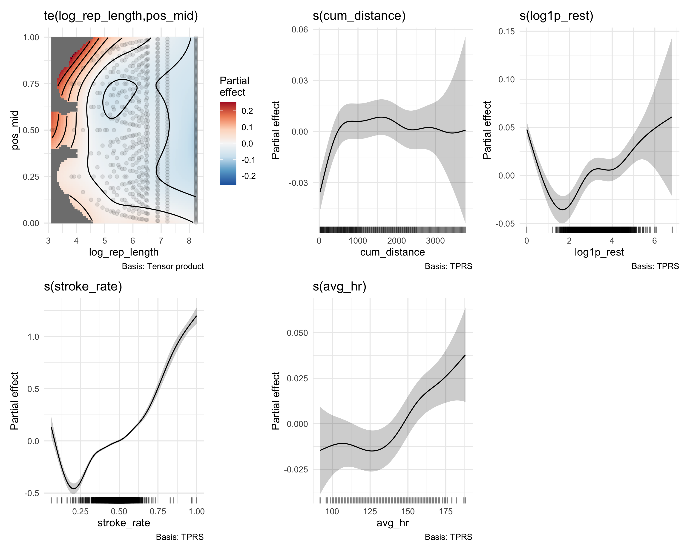
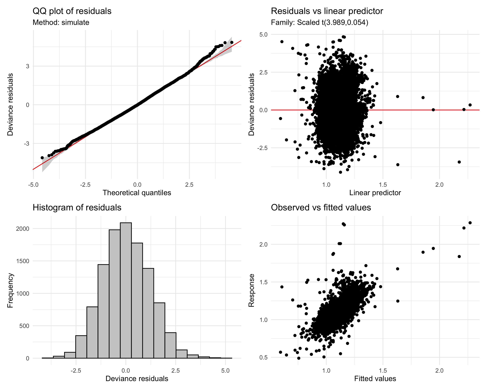
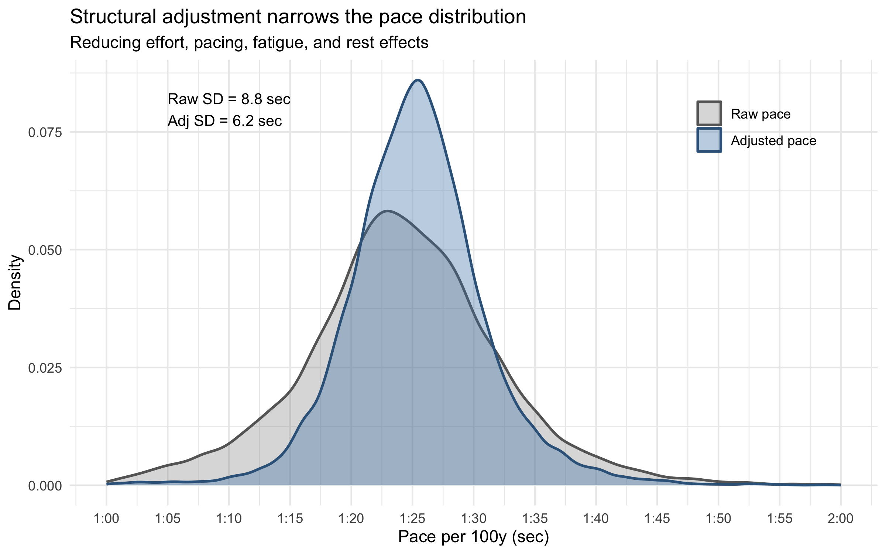
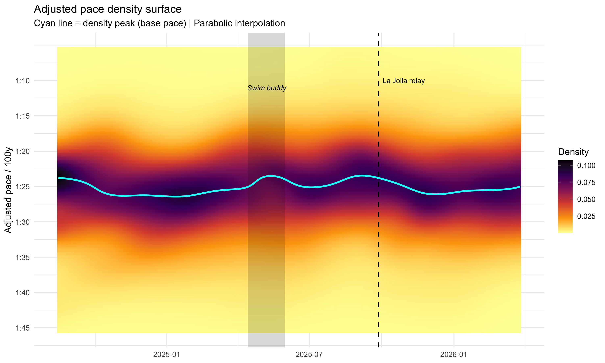
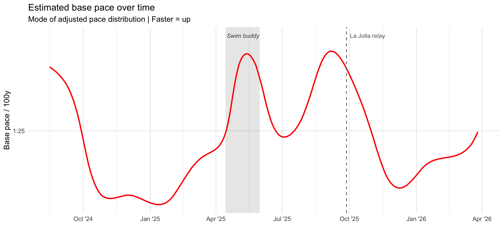

What’s Your Base? Estimating Swimming Fitness from Routine Training Data
R
GAM
Sports Analytics
Swimming
Time Series
Author
Julius Bogomolovas
Published
April 4, 2026
The Question Every Swimmer Gets Asked
I swim a lot, and like most swimmers, I am a little obsessive about tracking progress.
Garmin is great in many ways, but when it comes to swimming, the readouts are a bit underwhelming. You get average pace, effort score, SWOLF, and a few other summary numbers, but none of them really answer the question swimmers actually care about: how fast am I, really, right now?
There are formal ways to get at that. You can do time trials, swim a CSS test, or race. But those are just occasional snapshots. What I wanted was something more automatic: some kind of session-by-session measure that tells me how fast, or how fit, I was swimming in an ordinary workout.
In swimming, that idea is usually captured by base pace. If you join a masters team, one of the first questions people ask is: what’s your base? Roughly speaking, it is the pace you can hold steadily for repeat 100s on short rest. Not easy, not all-out, just your solid training pace. It is close to CSS, usually a bit slower, and it is one of the most practical ways swimmers think about fitness.
So I started wondering: could I estimate something like that automatically from routine workout data?
That is harder than it sounds, because swim workouts are messy on purpose. Within a single session you swim at different efforts, different distances, with different rest, and at different stages of fatigue. Sometimes you are sprinting, sometimes cruising, sometimes just surviving the set. So the average pace Garmin gives you is not really a fitness metric. It is heavily shaped by the structure of the workout itself.
That was really the whole motivation for this project.
In a previous post, I showed that GAMs can do a pretty good job modeling swim speed from workout structure and pulling out broad trends over time. That was a useful first step, but it still had a big limitation: it could not really separate swimming slow because I was tired from swimming slow because I was intentionally taking it easy. Effort and fitness were still tangled together.
This post is my attempt to go one step further. The idea is to use GAMs to tease apart lap speed by accounting for the main things that distort it — repeat length, position within a rep, accumulated fatigue, rest, stroke rate, heart rate, and so on — and then smooth the cleaned-up signal over time to get an estimate of base pace.
And because any homemade metric needs some kind of reality check, I have a couple of built-in positive controls. During this period I was training consistently toward the La Jolla Rough Water Swim relay on September 27, 2025, so if this metric is capturing something real, I should be getting faster into that race. I also had a stretch in spring 2025 when I was training with a swim buddy, which reliably made me swim harder and better than usual. So, at the very least, I would hope this thing can detect those signals and not just produce a fancy-looking curve.
In other words, the goal here is pretty simple: take messy routine swim data and turn it into a number swimmers already understand intuitively — a proxy for how fast, or how fit, I really was in a given session.
The Pipeline at a Glance
The pipeline has two stages, each built around a generalized additive model:
Structural GAM — reduces the influence of within-session mechanics (pacing, fatigue, rest, pool length) and effort (stroke rate, heart rate) on raw speed
Density surface GAM — smooths the adjusted pace distribution over calendar time, with peak extraction via parabolic interpolation
The output is a continuous fitness curve expressed in pace per 100 yards — the unit swimmers think in.
Data
FIT File Extraction
All data comes from Garmin FIT files recorded during pool swimming sessions, read via the FITfileR package (Smith 2025). The extraction pulls three message types per file: session-level metadata (date, pool length), per-length timing and stroke data, and per-lap heart rate. The full extraction runs in parallel across 7 cores and takes a few minutes.
Block 1: FIT file extraction (not evaluated — requires local FIT files)
The response variable is speed (m/s) = pool length / elapsed time, which is pool-length-independent by construction.
The key predictors fall into two groups:
Structural predictors describe where each length sits within the workout:
pos_mid — normalized position within the interval, \((i - 0.5) / n\). A value near 0 is the first length, near 1 is the last.
log_rep_length — log of interval distance in meters. Log scale because the difference between a 50 m and 100 m is larger than between 250 m and 300 m.
cum_distance — running total of meters swum in the session so far.
log1p_rest — log(1 + rest seconds) before each interval. First lengths after a wall start get the preceding idle duration; mid-interval lengths get 0 (lengths that continue through the wall without stopping).
pool_length — pool length in meters (22.86 m for a 25-yard pool, 50 m for long course, etc.).
set_type — freestyle fraction of the interval, grouped into three levels: pure freestyle, mixed, and IM set. A freestyle length inside an IM set may behave differently from one in a pure freestyle set.
Effort predictors describe how hard the swimmer is working:
stroke_rate — strokes per second. In my data, distance per stroke is nearly flat overall (\(r = 0.01\)), so most of the speed variation appears to be driven by stroke rate.
avg_hr — average heart rate for the interval. The watch tracks HR continuously, but pool swimming FIT files only report it aggregated per interval. For a continuous 100 (4 lengths), all four lengths share the same HR value. This means HR distinguishes effort between intervals, while stroke rate captures effort variation within them. Correlation between the two is only 0.24, confirming independent information. Available for 81% of lengths; sessions without HR data are excluded.
Tensor productte(pos_mid, log_rep_length) rather than separate smooths, because pacing shape genuinely varies with rep distance — the step function of a 50 looks nothing like the gradual ramp of a 300.
scat() family — a scaled \(t\)-distribution rather than Gaussian. Watch glitches, bad stroke detection, and occasional anomalous sprints or coasts create heavy-tailed residuals. The estimated degrees of freedom (\(\approx 4\)) confirm this; scat() automatically down-weights these without aggressive deletion (Wood 2017).
bam() with discrete = TRUE for computational efficiency on roughly 10K rows (Wood 2011).
No temporal smooth. One might consider adding s(date) to capture the fitness trend directly in Stage 1. I deliberately omit it: a temporal smooth here would compete with the density surface in Stage 2, creating identifiability issues — if Stage 1 already absorbs the fitness trend, the density surface has nothing left to track. Practically, I tested including s(date_num) and found it introduced instability in the smooth estimates without improving the adjusted pace quality. The structural GAM stays purely cross-sectional (modeling within-session mechanics), and all temporal evolution is delegated to Stage 2.
Block 5: Fit structural GAM
fit_structural <-bam( speed ~te(pos_mid, log_rep_length, k =c(5, 4)) +s(cum_distance, k =10) +s(log1p_rest, k =6) + pool_length +s(stroke_rate, k =10) +s(avg_hr) + set_type,data = d_free_hr,family =scat(),method ="fREML",discrete =TRUE)sm <-summary(fit_structural)
R² = 0.531
scat df = 3.99
What Each Term Captures
Partial effect plots
draw(fit_structural, residuals =FALSE)

Partial effects of each smooth term. Stroke rate dominates (~1.7 m/s range), confirming it is the primary effort lever. The pacing surface, cumulative distance, rest state, and heart rate each capture distinct structural effects.
The partial effects line up pretty well with what you would expect as a swimmer:
Tensor (pacing × rep distance) — shorter sets tend to be faster, and speed is higher at the start and end of intervals compared to the middle.
Cumulative distance — you can see the slower warmup in the first few hundred meters, followed by a plateau, and more variable speed toward the end of the workout.
Rest state — shows a U-shape. At log1p_rest = 0, which mostly corresponds to lengths that continue through the wall without stopping, speed is relatively high because the swimmer carries momentum through the turn. As rest increases from zero (short wall starts), speed drops — the swimmer has stopped but hasn’t recovered yet. With longer rest, speed recovers back toward that turn-continuation baseline.
Stroke rate — dominates everything, spanning roughly 1.7 m/s across the full speed range. This confirms stroke rate is the primary effort lever. Note that unusually fast speeds at low stroke rates likely correspond to sets with fins or paddles, which the model cannot distinguish.
Heart rate — adds a smaller but real contribution. Everything above roughly 135 bpm is associated with higher speed.
Model diagnostics
appraise(fit_structural)

Model diagnostics via gratia::appraise(). The QQ plot confirms the scat() family is appropriate — a Gaussian fit would show heavy tails.
Most terms pass the basis adequacy check comfortably. The stroke rate smooth has a low \(k\)-index, but this is not surprising — the relationship between stroke rate and speed is strong and nearly linear, so the smooth is doing most of its work with very few effective degrees of freedom. The low \(k\)-index reflects the fact that there is real speed variation at any given stroke rate (from unmeasured factors like equipment, kick intensity, etc.) rather than a problem with the model.
Computing Adjusted Pace
The structural GAM explains about half the variance in raw speed. It doesn’t perfectly remove structural effects — it reduces them substantially, narrowing the pace distribution so the fitness signal becomes more visible. The adjusted pace is computed as:
where \(\hat{f}\) is the structural model prediction and \(\mathbf{x}_{\text{ref}}\) is a fixed reference condition: mid-rep of a typical repeat, mid-workout, off a flip turn, at median stroke rate and heart rate, in a 25-yard pool, in a pure freestyle set. The reference point gives the adjusted pace an interpretable anchor — it represents the predicted speed under standardized conditions.
base SR: 0.483 str/s | pool: 22.86 m | median HR: 148 bpm
The Adjustment Tightens the Distribution
The whole point of Stage 1 is to reduce noise so that the fitness signal becomes visible. Here’s the effect — raw pace versus adjusted pace:
Variance reduction visualization
d_free_hr$raw_pace <-91.44/ d_free_hr$speeddensity_df <-bind_rows( d_free_hr %>%transmute(pace = raw_pace, type ="Raw pace"), d_free_hr %>%transmute(pace = adj_pace, type ="Adjusted pace")) %>%mutate(type =factor(type, levels =c("Raw pace", "Adjusted pace")))raw_sd <-round(sd(d_free_hr$raw_pace, na.rm =TRUE), 1)adj_sd <-round(sd(d_free_hr$adj_pace, na.rm =TRUE), 1)ggplot(density_df, aes(x = pace, fill = type, color = type)) +geom_density(alpha =0.35, linewidth =0.8) +scale_x_continuous(name ="Pace per 100y (sec)",limits =c(60, 120),breaks =seq(60, 120, by =5),labels =function(x) sprintf("%d:%02d", x %/%60, x %%60) ) +scale_fill_manual(values =c("grey60", "steelblue")) +scale_color_manual(values =c("grey40", "steelblue4")) +annotate("text", x =65, y =Inf, vjust =2, hjust =0,label =paste0("Raw SD = ", raw_sd, " sec\nAdj SD = ", adj_sd, " sec"),size =3.5) +labs(title ="Structural adjustment narrows the pace distribution",subtitle ="Reducing effort, pacing, fatigue, and rest effects",y ="Density", fill =NULL, color =NULL) +theme(legend.position =c(0.85, 0.85))

The structural adjustment narrows the pace distribution substantially, reducing workout design noise that would otherwise mask the fitness signal.
Stage 2: The Density Surface
With adjusted paces in hand, the question becomes: how does the distribution of adjusted pace evolve over time? Rather than tracking a single session mean, I model the full pace distribution as a smooth surface over (date × pace).
Binning into a 2D Histogram
Each session’s adjusted paces are binned into 1-second pace bins, normalized to proportions. The resulting grid is completed with zeros so every session × pace combination has a value.
A tensor product GAM smooths the noisy session-level histograms into a continuous density surface. The model uses a quasibinomial family (logit link respects \([0, 1]\) bounds) and lets the penalty — not the basis dimension — control complexity (Wood 2017).
The surface has a temporal resolution of approximately 6 weeks — each density estimate borrows information from sessions within roughly ±3 weeks. In this retrospective analysis the tensor product smooths bidirectionally, borrowing from both past and future sessions. In a rolling real-time use case, the same idea could be applied with a trailing window so the estimate only borrows from the past.
Predict on fine grid
pred_grid <-crossing(date_num =seq(min(full_grid$date_num), max(full_grid$date_num),length.out =200),pace_mid =seq(min(full_grid$pace_mid), max(full_grid$pace_mid), by =0.5))pred_grid$pred <-predict(fit_density, newdata = pred_grid, type ="response")pred_grid$date <-min(d_plot$session_date) + pred_grid$date_num
Base Pace Extraction
The fitness metric is the mode of the adjusted pace distribution at each time point — the pace where the density surface peaks. This is the “base” in the sense swimmers use the word: the pace you naturally settle into across a typical training session, after accounting for effort and workout structure.
Raw grid evaluation produces step-function artifacts, so I refine the peak location with parabolic interpolation through 5 grid points centered on the argmax:
Block 9: Extract base pace via parabolic interpolation
# Formatting helpersformat_pace <-function(secs) {paste0(floor(secs /60), ":", sprintf("%04.1f", secs %%60))}race_date <-as.Date("2025-09-27")buddy_start <-as.Date("2025-04-14")buddy_end <-as.Date("2025-05-31")pace_ticks <-seq(70, 105, by =5)pace_labels <-sprintf("%d:%02d", pace_ticks %/%60, pace_ticks %%60)ggplot(pred_grid, aes(x = date, y = pace_mid, fill = pred)) +geom_raster(interpolate =TRUE) +scale_fill_viridis_c(option ="inferno", direction =-1, name ="Density") +scale_y_reverse(name ="Adjusted pace / 100y",breaks = pace_ticks, labels = pace_labels) +# Swim buddy periodannotate("rect",xmin = buddy_start, xmax = buddy_end,ymin =-Inf, ymax =Inf,fill ="black", alpha =0.15) +annotate("text", x = buddy_start + (buddy_end - buddy_start) /2,y =min(pace_ticks) +1,label ="Swim buddy", color ="black", size =3, fontface ="italic") +# Racegeom_vline(xintercept = race_date, linetype =2, color ="black", linewidth =0.7) +annotate("text", x = race_date, y =min(pace_ticks),label ="La Jolla relay", color ="black", hjust =-0.1, size =3) +# Base pace tracegeom_line(data = gam_peak, aes(x = date, y = peak_pace, fill =NULL),color ="cyan", linewidth =1) +labs(title ="Adjusted pace density surface",subtitle ="Cyan line = density peak (base pace) | Parabolic interpolation",x =NULL) +theme(legend.position ="right")

Smoothed pace density surface over 19 months. Darker regions indicate more laps at that pace. The cyan line traces the density peak (base pace). The vertical dashed line marks the La Jolla Rough Water Swim relay; the shaded region marks a period of training with a swim buddy.
The Base Pace Trend
Base pace time series
ggplot(gam_peak, aes(x = date, y = peak_pace)) +# Swim buddy shadingannotate("rect",xmin = buddy_start, xmax = buddy_end,ymin =-Inf, ymax =Inf,fill ="black", alpha =0.1) +annotate("text", x = buddy_start + (buddy_end - buddy_start) /2,y =min(gam_peak$peak_pace) -0.3,label ="Swim buddy", color ="grey30", size =3, fontface ="italic") +geom_line(color ="red", linewidth =0.9) +scale_y_reverse(name ="Base pace / 100y",breaks = pace_ticks, labels = pace_labels) +scale_x_date(date_breaks ="3 months", date_labels ="%b '%y") +geom_vline(xintercept = race_date, linetype =2, color ="grey40") +annotate("text", x = race_date, y =min(gam_peak$peak_pace) -0.3,label ="La Jolla relay", color ="grey40", hjust =-0.1, size =3) +labs(title ="Estimated base pace over time",subtitle ="Mode of adjusted pace distribution | Faster = up",x =NULL)

Estimated base pace over time. Y-axis is reversed so faster is up. The metric captures mesocycle oscillations and shows the expected peak leading into the September 2025 race.
Base pace range: 1:23.5 to 1:26.4 | span: 3 sec
Current (latest): 1:25.0 /100y
A few things stand out immediately. First, the base estimate is not flat: it moves on the scale of weeks to months in a way that looks like actual training rather than random session noise. Second, it trends faster heading into the September 2025 relay, which is exactly what I would hope to see if the metric is capturing real fitness. Third, the swim-buddy block lines up with a visibly faster patch as well. That is reassuring, because those are two periods where I independently expected to be swimming better.
Raw 2D histogram before GAM smoothing. The density surface captures the dominant structure while suppressing session-to-session noise.
Limitations and Future Directions
Equipment confound. Pull sets with paddles and buoy are systematically faster but equipment use is not recorded in FIT files. You can see this in the stroke rate partial effect — the cluster of fast speeds at low stroke rates likely corresponds to equipment-assisted sets. The model cannot distinguish these from genuinely efficient swimming, so they contribute noise to the adjusted paces.
Retrospective smoothing. In the analysis above, the density surface borrows from both earlier and later sessions, so the plotted curve is best understood as a retrospective fitness trace. But that does not mean the framework is limited to retrospective use. In ongoing monitoring, the right edge naturally has no “future” to borrow from anyway, so the newest workouts are already estimated from past data only. Practically, this could be made more efficient by fitting on rolling windows rather than the full history: for example, Stage 1 could be refit on a recent block of sessions to adapt to gradual changes in workout structure, while Stage 2 could be run on only the last ~100 sessions, since real pace changes are usually slow and the density surface mainly needs local history rather than the entire archive.
Future work. The same pipeline could be applied to other strokes — backstroke, breaststroke, butterfly — each with its own structural model.
Summary
Two GAMs, one purpose. The first reduces within-session structural variation (pacing, fatigue, rest, effort) to produce adjusted pace. The second smooths the adjusted pace distribution over calendar time and extracts its peak as a base pace estimate.
The resulting base pace metric:
Produces a running estimate that can be refreshed with each new session
Is robust to effort variation (easy days don’t look like fitness drops)
Captures mesocycle oscillations invisible to raw averages
Showed the expected fitness peak heading into the La Jolla relay
In the full retrospective version shown here, the surface borrows a little from the future as well as the past. For ongoing monitoring, though, the newest workout naturally sits at the right edge and has no future data available, so in practice the estimate there is already driven only by past sessions. A practical real-time implementation would therefore not need to rerun everything on the full archive: Stage 1 could be updated on a rolling window to stay calibrated to recent workout structure, and Stage 2 could use only the last ~100 sessions or so, since changes in true pace are slow and mostly local in time.
The full extraction and analysis code is available on GitHub.
Visualization and diagnostics built with gratia(Simpson 2024). Model fitting via mgcv(Wood 2011, 2017).
Wood, Simon N. 2011. “Fast Stable Restricted Maximum Likelihood and Marginal Likelihood Estimation of Semiparametric Generalized Linear Models.”Journal of the Royal Statistical Society: Series B 73 (1): 3–36. https://doi.org/10.1111/j.1467-9868.2010.00749.x.